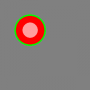

Color
Format
color colorname
color ( colorname )
color rgb_value
color ( rgb_value )
color pen_colorname , brush_colorname
color ( pen_colorname , brush_colorname )
color pen_rgb_value , brush_rgb_value
color ( pen_rgb_value , brush_rgb_value )
Description
Sets the current drawing color to colorname or to an ARGB value where ( (a * 256 + r) * 256 + b) * 256 + g. If a single color is specified both the pen and the brush will be set to the same color.
When drawing solid shapes (Chord,Circle,Pie,Poly,Rect, and Stamp) the border of the shape will be drawn with the pen color and the shape itself will be filled with the brush color. A brush color of CLEAR is used to not fill a closed shape.
If the current pen and brush are both set to CLEAR the pixels or shapes drawn will clear the pixels of the graphics output area and make them transparent. This is especially useful when creating sprites using the Spriteslice command.
| Color names and RGB values | |||
|---|---|---|---|
| Color Name | ARGB Values | Integer | |
| black | 255, 0, 0, 0 | 4278190080 | |
| white | 255, 255, 255, 255 | 4294506744 | |
| red | 255, 255, 0, 0 | 4294901760 | |
| darkred | 255, 128, 0, 0 | 4286578688 | |
| green | 255, 0, 255, 0 | 4278255360 | |
| darkgreen | 255, 0, 128, 0 | 4278222848 | |
| blue | 255, 0, 0, 255 | 4278190335 | |
| darkblue | 255, 0, 0, 128 | 4278190208 | |
| cyan | 255, 0, 255, 255 | 4278255615 | |
| darkcyan | 255, 0, 128, 128 | 4278222976 | |
| purple | 255, 255, 0, 255 | 4294902015 | |
| darkpurple | 255, 128, 0, 128 | 4286578816 | |
| yellow | 255, 255, 255, 0 | 4294967040 | |
| darkyellow | 255, 128, 128 ,0 | 4286611456 | |
| orange | 255, 255, 102, 0 | 4294927872 | |
| darkorange | 255, 176, 61 ,0 | 4289344256 | |
| grey | 255, 164, 164 ,164 | 4288980132 | |
| darkgrey | 255, 128, 128 ,128 | 4286611584 | |
| clear | 0, 0, 0, 0 | 0 | |
Deprecated Form
In version 0.9.9.26 the statement form “color red, blue, green” or “color ( red, blue, green )” was deprecated and a warning will be displayed when it is encountered. It should be replaced with “color rgb ( red, blue, green )”.
See Also
Example
clg color rgb(128,128,128) rect 0,0,graphwidth, graphheight penwidth 5 color green,red circle 100,100,50 penwidth 1 color rgb(255,160,160) circle 100,100,25
Will draw a grey rectangle with a green circle filled with red and then a pink circle inside it.

{kind=link}
History
0.9.5m - added “COLOR r,g,b” form and numeric representation of color names
0.9.9.26 - Added brush color and deprecated the “COLOR r,g,b”.
0.9.9.28 - Changed color values to include Alpha (transparency) and changed color constants to new ARGB values.
0.9.9.45 - changed values to positive numbers following formula as documented.